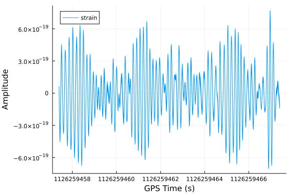
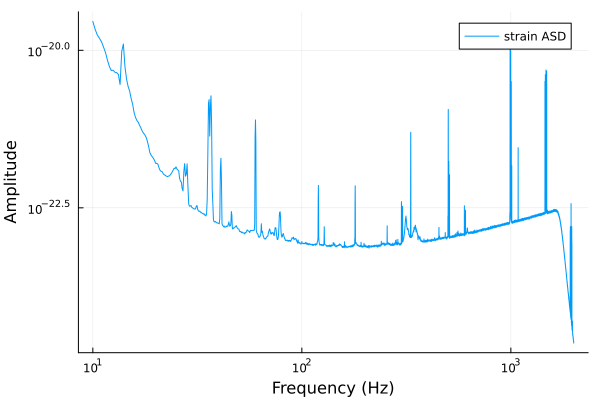
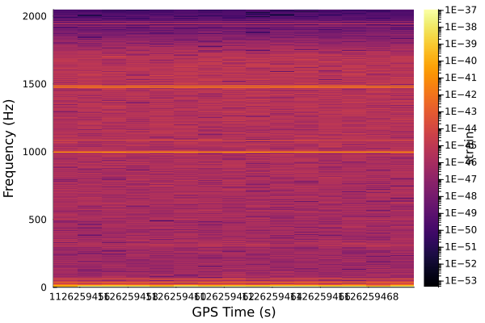
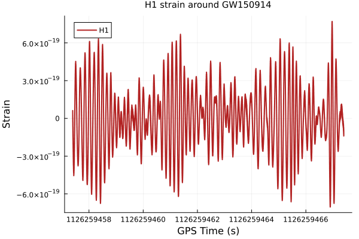
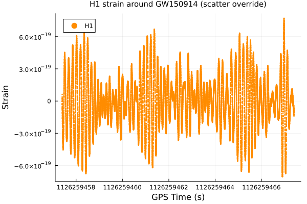
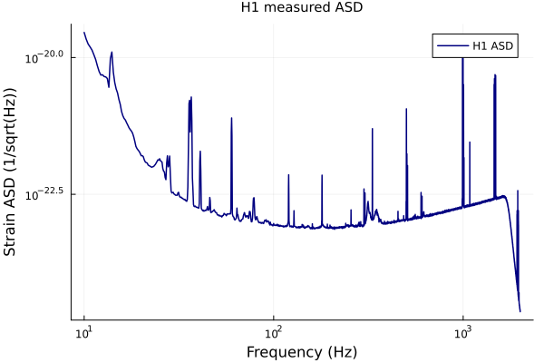
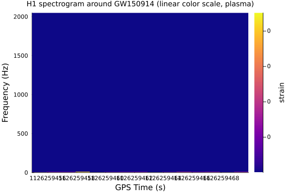
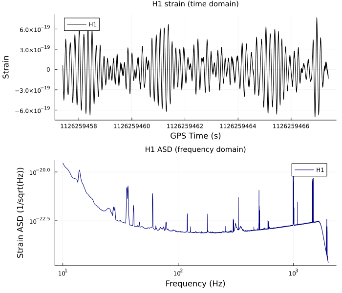
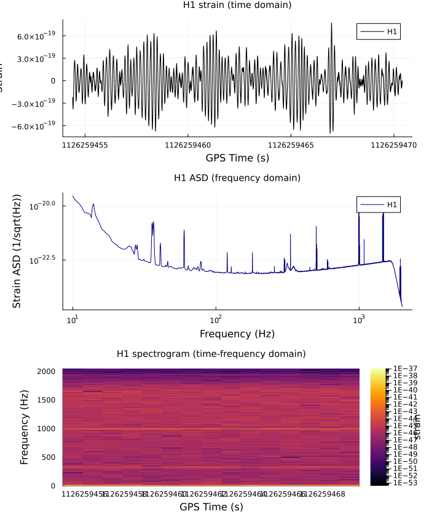
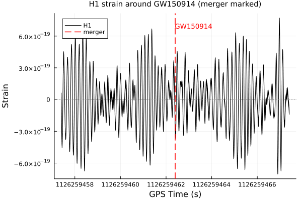

Plotting Recipes
GravitationalWaveData.jl's plotting support uses RecipesBase.jl's @recipe macro, defined once per type in ext/GravitationalWaveDataRecipesBaseExt.jl. A @recipe function plot(ts::TimeSeries) block is really just a method of RecipesBase.apply_recipe reached via multiple dispatch — when a RecipesBase-backed plotting package (Plots.jl here) sees plot(ts) and ts isn't already a type it knows how to draw, it asks RecipesBase whether any recipe applies, and ours fires. The recipe's job is just to (1) set some default plot attributes and (2) hand back the (x, y) (or (x, y, z)) data to actually plot — nothing about TimeSeries/FrequencySeries/Spectrogram needs to know about plotting at all. That's also why this only works once a plotting package is loaded: GravitationalWaveData itself has no hard dependency on Plots.jl, ext/GravitationalWaveDataRecipesBaseExt.jl is a package extension that only compiles once both GravitationalWaveData and RecipesBase are present in the session (see that file's own header comment).
This tutorial works directly from ext/GravitationalWaveDataRecipesBaseExt.jl's source: what each recipe's defaults are, how to override them, and how they compose with the rest of Plots.jl (multi-panel layouts, plain Plots.jl primitives like vline!).
using GravitationalWaveData
using Plots
gr()Plots.GRBackend()Fetching real data
As with the other tutorials, we reuse this project's standard GW150914 H1 cross-check segment (already locally cached from the Getting Started / PSD & ASD / Coherence tutorials, so this is free after the first fetch anywhere in the docs build):
path = fetch_open_data("H1", 1126256640, 1126260736)
strain, dq_mask = load_gwosc_strain(path)
merger_gps = 1126259462.41.1262594624e9A ten-second zoom around the merger for the TimeSeries examples (raw strain is noise-dominated at full 4096 s scale, so a zoom is more legible on a line plot):
zoom = crop(strain, merger_gps - 5, merger_gps + 5)TimeSeries{Float64}(40960 samples, t0=1.1262594573999023e9, dt=0.000244140625, duration=10.0s, name="strain")An asd of the full segment for the FrequencySeries examples, cropped to a plottable band (log-log axes can't show the f=0 DC bin, and the aLIGO band of interest is 10-2000 Hz anyway — same band the PSD & ASD tutorial uses):
h1_asd = asd(strain; seglen=4 * 4096, overlap=0.5)
asd_band = crop(h1_asd, 10.0, 2000.0)FrequencySeries{Float64}(7960 bins, f0=10.0, df=0.25, name="strain ASD")A spectrogram of a 16 s window around the merger for the Spectrogram examples (the full 4096 s segment would make for a very wide, slow-to-render heatmap; 16 s is enough to see structure without the cost):
spec_zoom = crop(strain, merger_gps - 8, merger_gps + 8)
spec = spectrogram(spec_zoom)Spectrogram{Float64}(4097 freq bins x 15 time bins, t0=1.1262594553999023e9, dt=1.0, f0=0.0, df=0.5, name="strain")1. Plain defaults
With no keyword arguments at all, each recipe's own defaults apply. Reading ext/GravitationalWaveDataRecipesBaseExt.jl:
TimeSeries:seriestype --> :path, linear-linear axes,xlabel --> "GPS Time (s)",ylabel --> "Amplitude",labeltaken fromts.nameif set.FrequencySeries:seriestype --> :path, butxscale --> :log10andyscale --> :log10— the near-universal convention for PSD/ASD-shaped curves in GW data analysis.Spectrogram:seriestype --> :heatmap, x = GPS time, y = frequency, color = power, withcolorbar_scale --> :log10since raw STFT power spans many orders of magnitude.
plot(zoom)
plot(asd_band)
plot(spec)
2. Overriding recipe defaults
Every attribute in every recipe above is set with -->, never :=. In RecipesBase, --> means "use this value unless the caller already supplied one for this same keyword in this same call" — it's a default, not a fixed choice. := (which none of these three recipes use) would instead force the value regardless of what the caller passes, which is exactly why none of xlabel, ylabel, seriestype, xscale/yscale, or colorbar_scale is fixed with it: nothing about a TimeSeries/FrequencySeries/Spectrogram's own correctness depends on a particular color, label, or even (for FrequencySeries) a log-scaled axis — a caller with a linearly-scaled quantity stored in a FrequencySeries (like coherence, see the Coherence & CSD tutorial) needs to be able to opt out of the log-log default, and --> is exactly what makes plot(fs; yscale=:identity) work.
Concretely, every one of these keywords passed explicitly simply wins over the recipe's own --> default in the same call:
plot(zoom; color=:firebrick, linewidth=2, title="H1 strain around GW150914",
ylabel="Strain", label="H1")
seriestype itself is just another attribute set with -->, so it's overridable the same way — nothing pins a TimeSeries to a line plot specifically:
plot(zoom; seriestype=:scatter, markersize=1.5, markerstrokewidth=0, color=:darkorange,
title="H1 strain around GW150914 (scatter override)", ylabel="Strain", label="H1")
plot(asd_band; color=:navy, linewidth=1.5, title="H1 measured ASD",
ylabel="Strain ASD (1/sqrt(Hz))", label="H1 ASD")
plot(spec; color=:plasma, colorbar_scale=:identity,
title="H1 spectrogram around GW150914 (linear color scale, plasma)")
The plot!() overlay gotcha
--> only avoids clobbering an explicit keyword within the call it's evaluated in — it does not remember an attribute set by an earlier call on the same plot object. Building a plot incrementally with plot!() re-triggers the recipe (and its --> defaults) on every call, so an attribute you set explicitly on the first call is silently reset back to the recipe's own default on the second unless you repeat it. Concretely, overlaying the same FrequencySeries recipe twice with only the first call's ylabel set:
p_bad = plot(asd_band; ylabel="Strain ASD (1/sqrt(Hz))", label="full band", color=:navy)
plot!(p_bad, crop(asd_band, 100.0, 300.0); label="100-300 Hz zoom", color=:orange)
p_bad.subplots[1][:yaxis][:guide] # reset back to the FrequencySeries recipe's own "Amplitude" default"Amplitude"Passing ylabel explicitly on every call fixes it:
p_good = plot(asd_band; ylabel="Strain ASD (1/sqrt(Hz))", label="full band", color=:navy)
plot!(p_good, crop(asd_band, 100.0, 300.0); ylabel="Strain ASD (1/sqrt(Hz))",
label="100-300 Hz zoom", color=:orange)
p_good.subplots[1][:yaxis][:guide]"Strain ASD (1/sqrt(Hz))"3. Multi-panel layouts
GravitationalWaveData.jl's recipes hand back plain (x, y)/(x, y, z) data plus attribute defaults, so multi-panel figures are exactly ordinary Plots.jl layout= composition — no special support needed on the recipe side. Building each panel as its own Plot object first (each ;-suppressed so it isn't displayed on its own — see the note below), then combining with layout=:
p_time = plot(zoom; color=:black, ylabel="Strain", title="H1 strain (time domain)", label="H1");
p_freq = plot(asd_band; color=:navy, ylabel="Strain ASD (1/sqrt(Hz))",
title="H1 ASD (frequency domain)", label="H1");(Both plot(...) calls above end with ;, suppressing that cell's own display — otherwise, per the Documenter @example-block duplicate-render trap, each panel would render once here on its own and again inside the combined figure below.)
plot(p_time, p_freq; layout=(2, 1), size=(700, 600))
A third panel (the spectrogram) composes the same way — layout=(3, 1) stacks all three, time domain, frequency domain, and time-frequency, for the same 16 s window used above:
p_spec = plot(spec; title="H1 spectrogram (time-frequency domain)");
plot(plot(spec_zoom; color=:black, ylabel="Strain", title="H1 strain (time domain)", label="H1"),
p_freq, p_spec; layout=(3, 1), size=(700, 850))
4. Composing with plain Plots.jl primitives
Because a GravitationalWaveData.jl recipe plot is an ordinary Plots.jl Plot object once built, everything else in the Plots.jl API — vline!, hline!, annotate!, scatter!, and so on — works on it completely normally. The recipe system is not a closed box: it only ever runs once, at the initial plot(...)/plot!(...) call for a GravitationalWaveData.jl series; anything added afterward is just standard Plots.jl.
Marking the GW150914 merger time on the time-domain zoom plot:
p_marked = plot(zoom; color=:black, ylabel="Strain", label="H1",
title="H1 strain around GW150914 (merger marked)")
vline!(p_marked, [merger_gps]; color=:red, linestyle=:dash, linewidth=1.5, label="merger")
hline!(p_marked, [0.0]; color=:gray, linestyle=:dot, linewidth=1, label=false)
annotate!(p_marked, merger_gps, maximum(zoom.data) * 0.9,
Plots.text("GW150914", 9, :red, :left))
p_marked
None of vline!, hline!, or annotate! know or care that zoom came from a @recipe rather than a hand-built Plots.jl series — the recipe's only job was translating a TimeSeries into (x, y) data and some default attributes once, at the initial plot() call; every subsequent Plots.jl call composes with the result exactly as it would with any other plot.
This page was generated using Literate.jl.